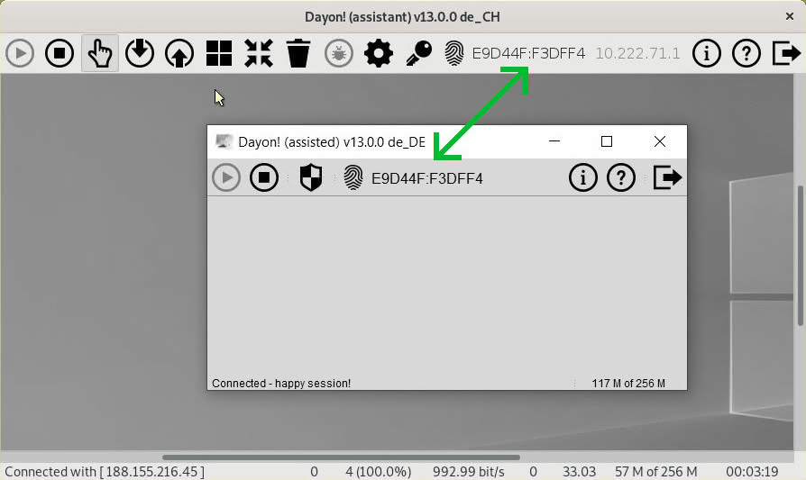
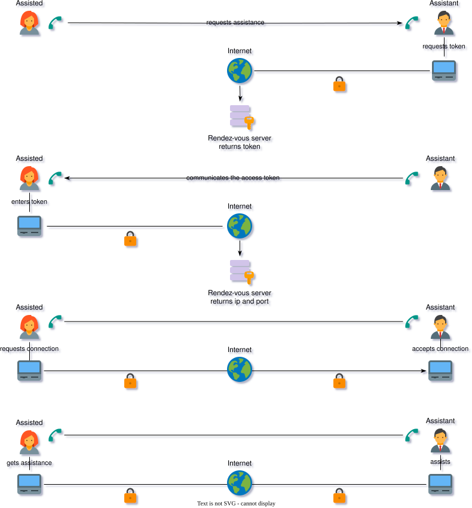
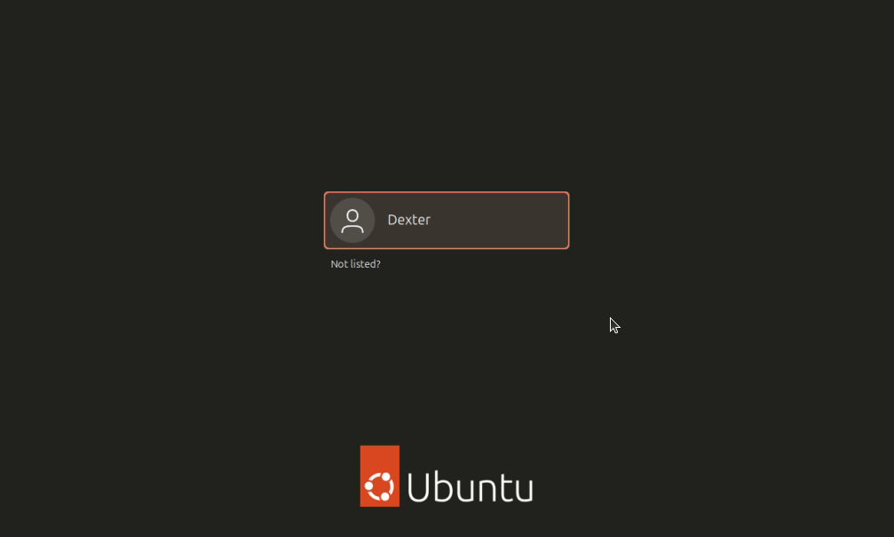

支持
非常欢迎您的反馈！请在 GitHub 上提问或开新的 issue。
Dayon! 配置目录
会在当前登录用户的默认配置目录，或 JAVA 属性 user.home 所指的目录下，创建 .dayon 文件夹，
用来存放已保存的用户设置和默认日志文件。
CRC 校验
在受助端（Assisted），屏幕会被分成若干区域，称为图块。 只有相对上一帧发生了变化的图块，才会通过网络发给协助端（Assistant）。 为了判断图块是否不同，目前会计算 CRC（也就是用一个整数来代表该图块的像素）。 为了速度，这个方法并不完美，所以有时变过的图块可能不会发给协助端（Assistant）。
到目前为止，我只在高强度测试里、针对极少数像素发现过这个问题。肉眼上看不出什么严重情况。
如果画面真的乱了，可以重启受助端（Assisted）；或者先试试 重置 操作（垃圾桶图标），
它会清掉所有缓存，并重新发送一整屏画面。
会话指纹
为防止中间人攻击，连接双方会显示会话指纹。 两边的指纹必须一致——如果不一致，就说明情况不对。 这项额外安全功能是在 Dayon! 第 13 版引入的。

注意：若要与 13 版以前的旧程序连接，需要打开兼容模式
 。
。
这只是权宜之计，请尽快让对方升级。
连接建立
译者注：中国大陆用户请注意，示意图仅供参考。若协助端（Assistant）位于运营商 NAT（如 CGNAT）之后，端口无法从互联网访问，令牌或手动填写地址可能无法建立连接。可尝试连接反转，或使用内网穿透（如 花生壳、FRP）、组网（如 ZeroTier）/ VPN。

把 Wayland 会话改成 Xorg
